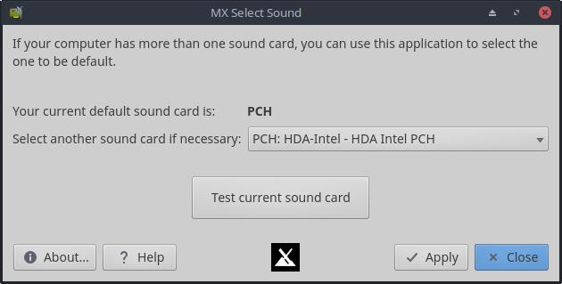

HELP: MX Sound Card
To select the sound card you want to use in MX Linux.

- Use the pull-down menu to select the sound card you want to use.
- Run the test to make sure you have selected the correct card.
Development history: BitJam (antiX), Adrian GU, fehlix
License: here.
v. 20150603